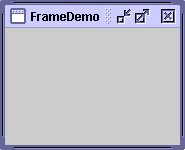
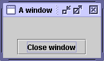
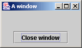
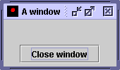

Feedback Form
|
|
Start of Tutorial > Start of Trail > Start of Lesson |
Search
Feedback Form |
A frame, implemented as an instance of theJFrameclass, is a window that typically has decorations such as a border, a title, and buttons for closing and iconifying the window. Applications with a GUI typically use at least one frame. Applets sometimes use frames, as well.
To make a window that's dependent on another window — disappearing when the other window is iconified, for example — use a dialog instead of a frame. To make a window that appears within another window, use an internal frame.
Here's a picture of the extremely plain window created by an example called FrameDemo. You can find the source code in
FrameDemo.java. You can run FrameDemo using Java Web Start
.
 The following code, taken from FrameDemo, is a typical example of the code used to create and set up a frame.Here are some details about the code://1. Optional: Specify who draws the window decorations. JFrame.setDefaultLookAndFeelDecorated(true); //2. Create the frame. JFrame frame = new JFrame("FrameDemo"); //3. Optional: What happens when the frame closes? frame.setDefaultCloseOperation(JFrame.EXIT_ON_CLOSE); //4. Create components and put them in the frame. //...create emptyLabel... frame.getContentPane().add(emptyLabel, BorderLayout.CENTER); //5. Size the frame. frame.pack(); //6. Show it. frame.setVisible(true);
- Calling
setDefaultLookAndFeelDecorated(true)requests that any subsequently created frames have window decorations provided by the look and feel, and not by the window system. For details, see Specifying Window Decorations.
- The next line of code creates a frame using a constructor that lets you set the frame's title. The other frequently used
JFrameconstructor is the no-argument constructor.
- Next the code specifies what should happen when the user closes the frame. The
EXIT_ON_CLOSEoperation, not surprisingly, makes the program exit when the user closes the frame. This behavior is appropriate for this program because the program has only one frame, and closing the frame makes the program useless. See Responding to Window-Closing Events for more information.
- The next bit of code adds a blank label to the frame's content pane. If you're not already familiar with content panes and how to add components to them, please read Adding Components to the Content Pane.
For frames that have menus, you'd typically add the menu bar to the frame here using the
setJMenuBarmethod. See How to Use Menus for details.
- The
packmethod sizes the frame so that all its contents are at or above their preferred sizes. An alternative topackis to establish a frame's size explicitly by callingsetSizeorsetBounds(which also sets the frame's location). In general, usingpackis preferable to callingsetSize, sincepackleaves the frame's layout manager in charge of the frame's size, and layout managers are good at adjusting to platform dependencies and other factors that affect component size.This example doesn't set the frame's location, but it's easy to do so using either the
setLocationRelativeToorsetLocationmethod. For example, the following code centers a frame onscreen:frame.setLocationRelativeTo(null);
- Calling
setVisible(true)makes the frame appear onscreen. Sometimes you might see theshowmethod used instead. The two usages are equivalent, but we usesetVisible(true)for consistency's sake.
Note: ThepackandsetVisiblemethods realize the frame and the components it contains. Once a component has been realized, any code that modifies or inspects it should be executed on the event-dispatching thread. For more information, refer to How to Use Threads
By default, window decorations are supplied by the native window system. However, you can request that the look and feel provide the decorations for a frame. You can even specify that the frame have no window decorations at all, a feature that can be used on its own, or to provide your own decorations, or with full-screen exclusive modeBesides specifying who provides the window decorations, you can also specify which icon is used the represent the window. Exactly how this icon is used depends on the window system or look and feel that provides the window decorations. If the window system supports minimization, then the icon is used to represent the minimized window. Most window systems or look and feels also display the icon in the window decorations. A typical icon size is 16x16 pixels, but some window systems use other sizes.
The following snapshots show three frames that are identical except for their window decorations. As you can tell by the appearance of the button in each frame, all three use the Java look and feel. However, only the first and third frames use window decorations provided by the Java look and feel. The second uses decorations provided by the window system, which happens to be Microsoft Windows but could as easily be any other system running the 1.4 version of the Java platform. The third frame uses Java look and feel window decorations, but has a custom icon.
   Window decorations provided by the look and feel Window decorations provided by the window system Custom icon; window decorations provided by the look and feel Here is an example of creating a frame with a custom icon and with window decorations provided by the look and feel:
//Ask for window decorations provided by the look and feel. JFrame.setDefaultLookAndFeelDecorated(true); //Create the frame. JFrame frame = new JFrame("A window"); //Set the frame's icon to an image loaded from a file. frame.setIconImage(new ImageIcon(imgURL).getImage());As the preceding code snippet implies, you must invoke the
setDefaultLookAndFeelDecoratedmethod before creating the frame whose decorations you wish to affect. The value you set withsetDefaultLookAndFeelDecoratedis used for all subsequently createdJFrames. You can switch back to using window system decorations by invokingJFrame.setDefaultLookAndFeelDecorated(false). Some look and feels might not support window decorations; in this case, the window system decorations are used.
Version note: ThesetDefaultLookAndFeelDecoratedmethod was added in 1.4. Previously, the decorations on a frame were always provided by the window system.The full source code for the application that creates the frames pictured above is in
FrameDemo2.javaImageobjects used as icons — one is loaded from a file, and the other is painted from scratch.
Try this:
- Run FrameDemo2 using JavaTM Web Start
- Bring up two windows, both with look-and-feel-provided decorations, but with different icons.
The Java look and feel displays the icons in its window decorations. Depending on your window system, the icon may be used elsewhere to represent the window, especially when the window is minimized.- Bring up one or more windows with window system decorations.
See if your window system treats these icons differently.- Bring up one or more windows with no window decorations.
Play with the various types of windows to see how the window decorations, window system, and frame icons interact.
By default, when the user closes a frame onscreen, the frame is hidden. Although invisible, the frame still exists and the program can make it visible again. If you want different behavior, then you need to either register a window listener that handles window-closing events, or you need to specify default close behavior using theThe default close operation is executed after the any window listeners handle the window-closing event. So, for example, assume that you specify that the default close operation is to dispose of a frame. You also implement a window listener that tests whether the frame is the last one visible and, if so, saves some data and exits the application. Under these conditions, when the user closes a frame, the window listener will be called first. If it doesn't exit the application, then the default close operation — disposing of the frame — will then be performed.setDefaultCloseOperationmethod. You can even do both.The argument to
setDefaultCloseOperationmust be one of the following values, the first three of which are defined in theWindowConstantsJFrame,JInternalPane, andJDialog):
DO_NOTHING_ON_CLOSE- Don't do anything when the user requests that the window close. Instead, the program should probably use a window listener that performs some other action in its
windowClosingmethod.HIDE_ON_CLOSE(the default forJDialogandJFrame)- Hide the window when the user closes it. This removes the window from the screen but leaves it displayable.
DISPOSE_ON_CLOSE(the default forJInternalFrame)- Hide and dispose of the window when the user closes it. This removes the window from the screen and frees up any resources used by it.
EXIT_ON_CLOSE(defined in theJFrame- Exit the application, using
System.exit(0). This is recommended for applications only. If used within an applet, aSecurityExceptionmay be thrown. Introduced in 1.3.As of 1.4,
Version note:DISPOSE_ON_CLOSEcan have results similar toEXIT_ON_CLOSEif only one window is onscreen. More precisely, when the last displayable window within the Java virtual machine (VM) is disposed of, the VM may terminate if it is 1.4 or a compatible version. In earlier versions such as 1.3 the VM remains running even when all windows have been disposed of. See AWT Threading Issues
For more information about handling window-closing events,
see
How to Write Window Listeners .
Besides handling window-closing events,
window listeners can also react to
other window state changes,
such as iconification and activation.
.
Besides handling window-closing events,
window listeners can also react to
other window state changes,
such as iconification and activation.
The following tables list the commonly usedJFrameconstructors and methods. Other methods you might want to call are defined by thejava.awt.Framejava.awt.Windowjava.awt.ComponentJFramedescends.Because each
JFrameobject has a root pane, frames have support for interposing input and painting behavior in front of the frame's children, placing children on different "layers", and for Swing menu bars. These topics are introduced in Using Top-Level Containers and explained in detail in How to Use Root Panes.The API for using frames falls into these categories:
- Creating and Setting Up a Frame
- Setting the Window Size and Location
- Methods Related to the Root Pane
Creating and Setting Up a Frame Method or Constructor Purpose JFrame()
JFrame(String)Create a frame that is initially invisible. The Stringargument provides a title for the frame. To make the frame visible, invokesetVisible(true)on it.void setDefaultCloseOperation(int)
int getDefaultCloseOperation()Set or get the operation that occurs when the user pushes the close button on this frame. Possible choices are: The first three constants are defined in the
DO_NOTHING_ON_CLOSEHIDE_ON_CLOSEDISPOSE_ON_CLOSEEXIT_ON_CLOSEWindowConstantsJFrameimplements. TheEXIT_ON_CLOSEconstant is defined in theJFramevoid setIconImage(Image)
Image getIconImage()
(inFrame)Set or get the icon that represents the frame. Note that the argument is a java.awt.Image javax.swing.ImageIcon(or any otherjavax.swing.Iconimplementation).void setTitle(String)
String getTitle()
(inFrame)Set or get the frame's title. void setUndecorated(boolean)
boolean isUndecorated()
(inFrame)Set or get whether the window system should provide decorations for this frame. Works only if the frame is not yet displayable (hasn't been packed or shown). Typically used with full-screen exclusive mode static void setDefaultLookAndFeelDecorated(boolean)
static boolean isDefaultLookAndFeelDecorated()Determine whether subsequently created JFrames should have their Window decorations (such as borders, widgets for closing the window, title) provided by the current look and feel. Note that this is only a hint, as some look and feels may not support this feature. Introduced in 1.4.
Setting the Window Size and Location Method Purpose void pack()
(inWindow)Size the window so that all its contents are at or above their preferred sizes. void setSize(int, int)
void setSize(Dimension)
Dimension getSize()
(inComponent)Set or get the total size of the window. The integer arguments to setSizespecify the width and height, respectively.void setBounds(int, int, int, int)
void setBounds(Rectangle)
Rectangle getBounds()
(inComponent)Set or get the size and position of the window. For the integer version of setBounds, the window's upper left corner is at the x, y location specified by the first two arguments, and has the width and height specified by the last two arguments.void setLocation(int, int)
Point getLocation()
(inComponent)Set or get the location of the upper left corner of the window. The parameters are the x and y values, respectively. void setLocationRelativeTo(Component)
(inWindow)Position the window so that it's centered over the specified component. If the argument is null, the window is centered onscreen. To properly center the window, you should invoke this method after the window's size has been set.
Methods Related to the Root Pane Method Purpose void setContentPane(Container)
Container getContentPane()Set or get the frame's content pane. The content pane contains the frame's visible GUI components and should be opaque. JRootPane createRootPane()
void setRootPane(JRootPane)
JRootPane getRootPane()Create, set, or get the frame's root pane. The root pane manages the interior of the frame including the content pane, the glass pane, and so on. void setJMenuBar(JMenuBar)
JMenuBar getJMenuBar()Set or get the frame's menu bar to manage a set of menus for the frame. void setGlassPane(Component)
Component getGlassPane()Set or get the frame's glass pane. You can use the glass pane to intercept mouse events or paint on top of your program's GUI. void setLayeredPane(JLayeredPane)
JLayeredPane getLayeredPane()Set or get the frame's layered pane. You can use the frame's layered pane to put components on top of or behind other components.
All of the standalone applications in this trail useJFrame. The following table lists a few and tells you where each is discussed.
Example Where Described Notes FrameDemoThe Example Explained Displays a basic frame with one component. FrameDemo2Specifying Window Decorations Lets you create frames with various window decorations. Framework— A study in creating and destroying windows, in implementing a menu bar, and in exiting an application. LayeredPaneDemoHow to Use Layered Panes Illustrates how to use a layered pane (but not the frame's layered pane). GlassPaneDemoThe Glass Pane Illustrates the use of a frame's glass pane. MenuDemoHow to Use Menus Shows how to put a JMenuBarin aJFrame.
|
|
Start of Tutorial > Start of Trail > Start of Lesson |
Search
Feedback Form |
Copyright 1995-2004 Sun Microsystems, Inc. All rights reserved.